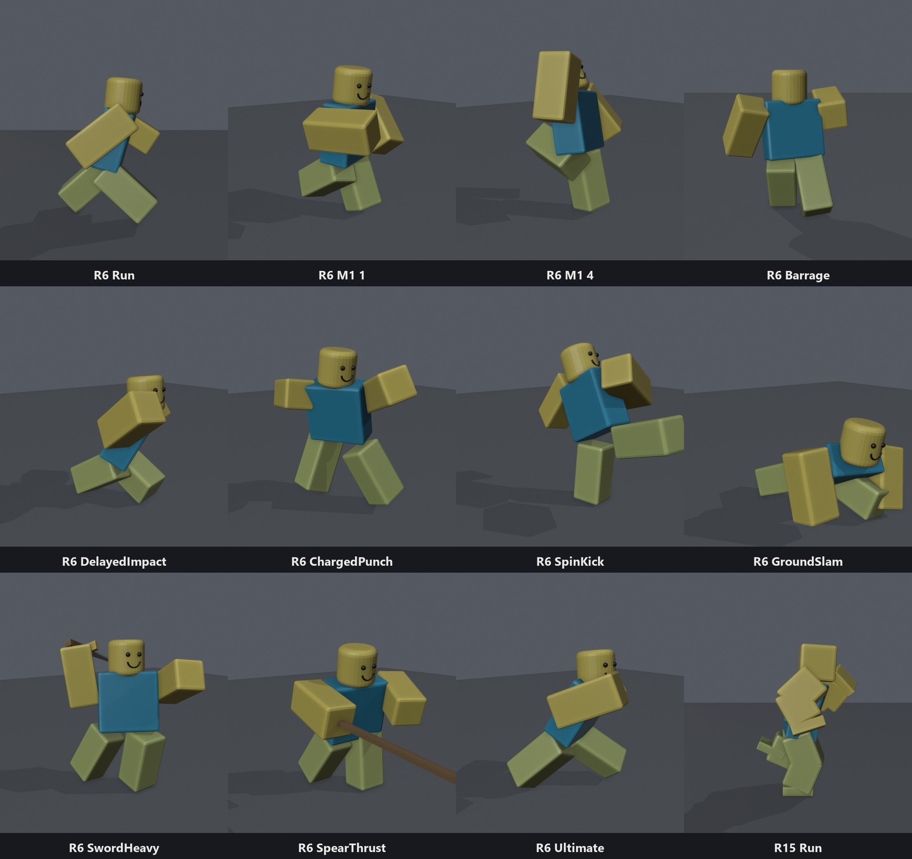
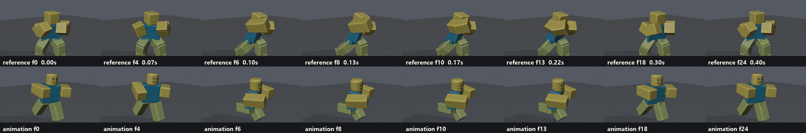
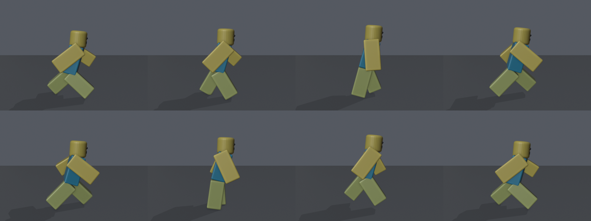

Roblox Animations with Claude: Blender MCP + Moon Animator 2
Tell Claude the move ("a 4-hit punch combo", "a sprint", "a sword slash") and get back a finished Roblox animation that plays in your game exactly as it looked when it was made.
Method by fwjelaa (FWJ STUDIOS). It's free to use in your own games. If you use it, show it or share it, please credit fwjelaa and link the video you got it from.

You don't need to know how to animate. Claude plans the timing, poses the character, checks every frame for mistakes, fixes them, and proves in Roblox Studio that Roblox plays it the same way.
Contents
- How it works
- What you need
- Setup (once)
- Make an animation from a reference
- Way A: Claude animates in Blender
- Way B: Claude animates in Studio, you open it in Moon Animator 2
- Watching it, opening it in Moon, publishing it
- Using the animations in your game
- What's in the pack
- Snappy vs weighty
- Under the hood
- Gotchas
- Numbers cheat sheet
- Credits
How it works
you: "make an R6 uppercut"
-> Claude plans the timeline (anticipation, strike, contact, follow-through) from real fighting-game numbers
-> Claude keys the poses in Blender (through the Blender MCP) or straight in Studio (through the Studio MCP)
-> automatic checks on every frame: feet in the floor? feet sliding? arm through the body? pops? loop seams?
-> Claude looks at it from two angles, fixes it, repeats
-> export: a Roblox KeyframeSequence (.rbxmx file + a paste-in script)
-> Studio replays it and compares every joint on every frame with Blender: "MATCHES BLENDER"
-> you watch it in Studio, open it in Moon Animator 2, publish it, use itTwo things make the results good instead of "AI-looking":
- Real timing. The snappy (battlegrounds) and weighty (Deepwoken / Mortal Kombat) presets come from fighting-game frame data and game-animation guides: wind-up, strike, hit-stop, recovery, overlap, overshoot, all in frames.
- Real checks. Claude can't feel an animation, so the kit measures it: the exact floor contact of R6's knee-less legs, planted feet sliding, parts passing through each other, one-frame snaps, loop seams. Planted feet are re-solved on every frame so they never skate. And the Studio check proves Roblox plays the export within about 1° of what Blender showed.
What you need
| What | Notes |
|---|---|
| Claude Code | The Code tab in the Claude desktop app, or the claude command line tool. Needs a paid Claude plan (Pro or Max) or an API key. |
| Blender 4.2 or newer | Free from blender.org. Tested on 5.1. Needed for Way A. |
| Python 3 | python.org. On Windows, tick "Add Python to PATH". |
| Roblox Studio | To use the animations. |
| The Blender MCP | "MCP for Blender" (free): lets Claude drive Blender. Setup below. |
| The Roblox Studio MCP | Built into Studio: lets Claude build, test and check in Studio. Setup below. |
| Moon Animator 2 | Optional (paid Studio plugin by xSIXx). Way B ends in Moon; Studio's own Animation Editor works too. |
Setup (once)
- Blender MCP. In a terminal:
claude mcp add blender uvx mcp-for-blender
(needsuvx mcp-for-blender install-addonuv:pip install uv). Restart Blender, enable Edit → Preferences → Add-ons → "Interface: MCP for Blender", then in the 3D view press N → MCP for Blender → Start MCP Server. - Roblox Studio MCP. In Studio: Assistant →
…→ Manage MCP Servers → Enable Studio as MCP server, then use its quick-connect button for Claude Code. - The pack. Unzip it (for example to
Documents\RobloxAnimations) and open the folder in Claude Code (desktop app: Code tab → pick the folder; command line:cdinto it and runclaude). - Let Studio read the pack (only while you work): Claude starts
python kit/serve.pyfor you. It shares the pack folder with Studio on your own computer only, and never the.secretsfolder.
Ask Claude "check my setup" and it will test all of it.
Make an animation from a reference
The fastest way to get exactly the move you want: show it to Claude.
- Grab a reference. Screen-record the move from a game, save a GIF, film yourself, or take a few screenshots. Best: one move, the whole body in shot, a steady camera, side or front three-quarter, real speed.
- Open the pack in Claude Code, drag the clip into the chat (or put it anywhere and paste its path) and say:
or typemake this animation, R6, call it UppercutSlam
/make-animwith the clip attached. - Claude reads the clip. It pulls the frames out (Blender reads mp4, mov, webm and gif) and makes a timing sheet: every frame labelled with its time and the matching frame of a 60 fps Roblox animation, so the wind-up, the hit and the recovery land on the same moments as your reference.
- Claude rebuilds the move in Blender, then puts your reference and its version side by side, frame for frame, fixes what doesn't match and repeats, the same way the Picture → Model pack compares against your picture.
- Done: the checks pass, Studio proves it plays the same, and you open it in Moon Animator 2 or publish it.

That's anims/R6_PunchFromRef.py, rebuilt from a clip this way; its notes show what Claude wrote down from the timing sheet.
R6 has no knees or elbows, so Claude fakes them the way good R6 animators do (leg splits, straight-arm arcs). It recreates the feel of a move; it never copies another game's animation files.
Way A: Claude animates in Blender
- Open Blender (MCP server started) and Roblox Studio (any place, Baseplate is fine).
- In Claude Code, in the pack folder, say what you want, for example:
or typemake an R6 sprint, snappy
/make-anim R6 sword spin attack, weighty. - Watch. Claude builds the rig in your Blender and keys the animation: you see it appear and can scrub the timeline. It runs the checks, looks at it from two angles, fixes it, and repeats.
- Done. Claude exports it, loads it into Studio, prints
MATCHES BLENDER, and shows you the final contact sheet. Files:out/<Name>.rbxmx: the KeyframeSequence (drag into Studio, or File → Import)out/<Name>.luau: the same as a script (paste into Studio's command bar)out/blend/<Name>.blend: the Blender file
No Blender MCP? It still works: Claude runs Blender in the background (python kit/run.py make <Name>) and shows you the contact sheets instead.

Way B: Claude animates in Studio, you open it in Moon Animator 2
No Blender needed. Claude writes the animation straight into Studio through the Studio MCP:
- Open Studio. Say:
make an R6 wave in Studio, then I'll open it in Moon
- Claude installs
AnimKit(one ModuleScript in ServerStorage), adds a test dummy, writes the animation, poses the dummy at its key frames and takes screenshots to check it (keep Studio's window visible), and saves it inServerStorage.RBX_ANIMSAVES.R6Dummy. - Open it in Moon Animator 2 (next section).
Both ways use the same pose language, so anything Claude makes one way it can remake the other.
Watching it, opening it in Moon, publishing it
Watch it in Studio without pressing Play (command bar, View → Command Bar):
require(game.ServerStorage.AnimKit).preview(workspace.R6Dummy, game.ServerStorage.Animations.R6_M1_1).play(3)Open it in Moon Animator 2:
- Plugins → Moon Animator 2 → File → New.
- Add the rig: Item → Add and click
R6Dummy(or use the Character Inserter for your own avatar). - File → Import (Shift+I), then click the animation in the Explorer:
ServerStorage → RBX_ANIMSAVES → R6Dummy → R6_M1_1. - Choose Replace Keyframes, then OK, and press play.
- File → Save to keep it as a Moon file. File → Export Rigs writes it back out as a KeyframeSequence.
Studio's built-in Animation Editor keeps its saves in that same RBX_ANIMSAVES folder, so it should list it too: select R6Dummy, open the editor, … → Load. You can also drag out/<Name>.rbxmx into Studio and import that.
Publish (you need this before a live game can play it): right-click the KeyframeSequence → Save to Roblox, or the Animation Editor's Publish to Roblox. Copy the id it gives you.
Automatic upload (optional)
If you make lots of animations, let the pack publish them:
- On create.roblox.com: Open Cloud → API Keys → Create API Key, add the Assets API with Read and Write (for a group game, create it for the group).
- Put the key in
.secrets/roblox-api-key.txt: just the key. - Fill in
config.json:group_id(group games) oruser_id, and an optionalname_prefix. - Ask Claude to "upload R6_M1_1 to R6_M1_4". It runs
python kit/upload.py R6_M1_1 R6_M1_2 ...and writesout/AnimationIds.luauwith all the ids.
⚠️ Never share your API key. Don't show it on stream, put it in a zip or commit it. If it leaks, delete it on create.roblox.com and make a new one.
Using the animations in your game
roblox/examples/ has ready-made scripts:
| File | Put it in | What it does |
|---|---|---|
AnimLoader.luau | ReplicatedStorage (ModuleScript AnimLoader) | AnimLoader.load(humanoid, "R6_M1_1") gives you a track by name. Uses the ids in an AnimationIds ModuleScript next to it; in Studio it falls back to unpublished test copies |
CombatClient.client.luau | StarterPlayer → StarterCharacterScripts (LocalScript) | Click = 4-hit M1 combo, Q = dash. Plays the R6 or the R15 set (R6_M1_1… / R15_M1_1…), whichever rig the player is. Hits are found at each animation's Hit marker, with hit-stop |
CombatServer.server.luau | ServerScriptService (Script) | Checks hits, deals 3/3/4/5 damage, plays the hit reaction for the victim's rig, stuns, launches on hit 4 |
MovementAnims.server.luau | ServerScriptService (Script) | Swaps the default idle/walk/run/jump/fall for yours |
WeaponGrip.server.luau | inside your weapon Tool (Script) | Replaces the Tool's grip weld with the Motor6D the weapon animations drive (set WEAPON to Sword, Spear, Dagger or Axe) |
Try it right now: with python kit/serve.py running, paste roblox/install_examples.luau into the command bar (its first line picks RIG = "R15" or "R6"), then press Play: click to punch the TrainingDummy, Q to dash. (It uses unpublished test copies, which only work in Studio.)
Your own game, R15: publish R15_M1_1…R15_M1_4, R15_HitReact and R15_Dash (right-click → Save to Roblox), put their ids in an AnimationIds ModuleScript next to AnimLoader (R15_M1_1 = "rbxassetid://…"), add CombatClient and CombatServer, and set Game Settings → Avatar to R15.
Listening for the hit in your own scripts:
local track = AnimLoader.load(humanoid, "R6_M1_1")
track:GetMarkerReachedSignal("Hit"):Connect(function()
-- check your hitbox here, on the client that plays the track
end)
track:Play(0.05)What's in the pack
| Path | What it is |
|---|---|
fwjelaa animation method.md | The master prompt. Paste it into Claude (with or without this pack) to make it a Roblox combat animator |
CLAUDE.md | The instructions Claude follows inside the pack: the flow, the kit, timing tables, quality bar, gotchas |
.claude/skills/make-anim/ | The /make-anim command |
kit/rigs.py | Exact R6 and R15 rigs for Blender (joint numbers measured in Studio) |
kit/animkit.py | Writing animations as code: keys, eases, holds, overlap, markers, mirror, ground the feet |
kit/export.py | Blender → KeyframeSequence, with the replay check that bakes anything Roblox would play differently |
kit/checks.py | The automatic checks |
kit/preview.py, kit/live.py, kit/run.py | Contact sheets and MP4s; the MCP entry point; the headless runner |
kit/reference.py + run.py ref / compare | Reference clips → timing sheets (ref/sheet_<Name>.png) and reference-vs-animation compares (out/compare_<Name>.png) |
ref/ | Your reference clips and their frames |
kit/serve.py, kit/upload.py | Share the pack with Studio; optional Open Cloud upload |
roblox/AnimKit.luau | The Studio side: build, test dummy, preview without publishing, verify against Blender, Way B authoring |
roblox/install.luau, roblox/install_examples.luau | One-paste installers for Studio |
roblox/examples/ | Game scripts (above) |
anims/ | The example animations, each a short Python file you can read |
research/ | The research behind every number, with sources |
The examples:
| Animation | What |
|---|---|
R6_Idle, R6_Walk, R6_Run, R6_Jump, R6_Fall, R6_Land, R6_Dash | Movement set (snappy) |
R6_M1_1 … R6_M1_4 | 4-hit M1 combo: right straight, left straight, right hook, uppercut finisher (snappy) |
R6_M1_1_Weighty … R6_M1_4_Weighty | The same combo with the weighty preset, from the same recipe |
R6_DashSide, R6_DashSideRight | Side dashes, for the game to push left or right on DashStart |
R6_DelayedImpact | JJS-style delayed-impact punch: the fist lands, stays buried, then a second burst (BlackFlash marker) |
R6_Barrage | Battlegrounds barrage: 10 punches on 2s in the anime style, then a lunging finisher |
R6_ChargedPunch | "Serious punch" style: a long trembling charge, a 2-frame strike, a huge follow-through |
R6_SpinKick | Full-turn spinning kick off the planted foot |
R6_GroundSlam | Knee up, fists overhead, stomp into a ground slam (Shockwave marker) |
R6_Block, R6_HitReact | Fist block (loop: start it with track:Play(0.07)) and hit reaction (Impact marker for hit-stop) |
R6_SwordSlash1, R6_SwordSlash2, R6_SwordHeavy, R6_SwordHeavy_Weighty, R6_SwordBlock, R6_SwordParry | Sword set, with Hit, TrailOn/TrailOff and Parry markers |
R6_SpearThrust | Spear: draw back, coil, lunging thrust (the kit also has Dagger and Axe weapons) |
R6_PunchFromRef | A punch rebuilt from a reference clip (see "Make an animation from a reference") |
R6_Ultimate | A 3.1 s special: stomp and power-up, trembling charge, 6-punch rush, finisher, hold, recovery |
R15_Idle, R15_Run | R15 movement (knees and elbows) |
R15_M1_1 … R15_M1_4, R15_Dash, R15_HitReact | The R15 M1 combo, dash and hit reaction: what CombatClient and CombatServer play on R15 characters |
The special moves are original animations made to feel like the best combat games (The Strongest Battlegrounds, Jujutsu Shenanigans, Deepwoken, Street Fighter 6, Guilty Gear, Sekiro…): research/05-popular-animations.md explains what makes each famous move read and has recipes for more.
All 41 pass every automatic check and were played back in Studio: Roblox matches Blender on every frame (worst joint 0.78°). Each one is in out/ as .rbxmx + .luau, most also as an MP4 in out/video/ for your own videos, plus the M1 combo and a sword combo as single clips (Combo_*.mp4). Make more with python kit/run.py video <Name> or python kit/run.py reel <A> <B> <C> --title MyCombo.
Snappy vs weighty
Every combat recipe can be made in both styles. Same move, different timing and size:
| Snappy (battlegrounds) | Weighty (Deepwoken / MK) | |
|---|---|---|
| M1 wind-up / strike / recover | 4 / 2 / 12 frames | 12 / 4 / 22 frames |
| Whole M1 | ~0.38 s | ~0.73 s |
| Overshoot | 12% | 5% |
| Hit-stop (game script) | 5 frames, 10-12 on the finisher | 3-4, 7-8 |
Say "weighty" (or "snappy") in your request. Want something in between? Ask for it: the presets are just numbers.
Under the hood
You don't need this to use the pack.
The pose language. Every joint gets three angles in degrees, turned like CFrame.Angles in its parent part's axes: +x swings an arm or leg forward (the head looks up, the torso leans back), +y turns to the character's left, +z swings the right arm out. The root joint (R6 Torso, R15 LowerTorso) can also move: (x, y, z, px, py, pz), py < 0 to crouch, pz < 0 to lunge.
a = ak.Anim("R6_M1_1", rig="R6", priority="Action")
a.full(0, STANCE, ease="quad_out") # stance, easing into the wind-up
a.full(4, windup, ease="cubic_in") # accelerate into the punch
a.full(6, contact, ease="linear").marker(6, "Hit", "1") # contact + the Hit marker
a.full(8, overshoot, ease="cubic_out") # carry through, then settle
a.full(23, STANCE) # back to the stanceWhy the numbers match exactly. Roblox's R6 joints are rotated in odd ways (that's why raw R6 numbers look scrambled). The kit builds Blender bones whose axes are the character's own axes, so Blender's rotations are the pose language, then converts each frame with Roblox's joint formula (Part1 = Part0 * C0 * Transform * C1⁻¹). The exporter keeps your keys where Roblox has a matching easing (so Moon shows clean keyframes), bakes the rest frame by frame, replays the result the way Roblox does, and bakes any stretch that drifts by more than 1°. Then AnimKit.verify plays it in Studio and compares every joint on every frame.
Things measured in Studio for this pack (October 2026):
- A pose's easing shapes the move to the next pose.
Constant+Injumps straight to the next pose;Constant+Outis the "hold" you'd expect.- The old
Cubiceasing has In and Out swapped;CubicV2is right. - Roblox's Elastic easing for poses isn't TweenService's.
- Joints keyed at different times each interpolate on their own; empty parent poses with Weight 0 are ignored.
- Between two poses Roblox doesn't follow an exact slerp: big turns between two keys drift a few degrees, so the exporter keeps every key-to-key turn under 30°.
- The new AnimationConstraint R15 characters get exactly the same joint values as classic Motor6D rigs.
- Scrubbing a one-shot track onto its very last frame in Edit mode leaves a stuck track that keeps posing the rig.
Other tools that do Blender → Roblox animation: Cautioned's RBXMonkey (Blender add-on + Studio plugin), animation-mcp, and the original Blender Animations plugin by Den_S. This pack differs in that Claude does the animating and every export is checked against Studio.
Gotchas
In Roblox
- Animations never move the character through the world. Dashes, lunges and knockback are pushed by the game script on the animation's markers (
DashStart,Hit). The examples do this. - Unpublished animations only play in Studio. Publish before testing in a live server.
- The R6 Animate script only plays "walk", never "run", and doesn't speed up a custom walk. R6 games put their run in the walk slot (
MovementAnimsdoes). - Weapons need a Motor6D, not the Tool's grip weld, named
Handlewith the same offsets (WeaponGripdoes it). - R15 characters use AnimationConstraints now (since May 2026). The animations play on them exactly the same (measured: within 0.04° of a classic Motor6D rig).
- Hit detection belongs on the client that plays the animation: markers can arrive late on the server.
- Big
RBX_ANIMSAVESfolders slow Studio down. Delete test saves you don't need. - Roblox's own FBX animation import has been reported broken for R6 since April 2026. This pack doesn't use it.
With Claude
- Keep Studio's window visible when Claude takes screenshots in Way B, or they come back dark.
- Update the Blender MCP add-on if
get_addon_statussays it's behind (uvx mcp-for-blender install-addon). - No public frame data exists for TSB, Jujutsu Shenanigans or Deepwoken. The presets are in the style of those games, built from fighting-game data; they're not copied.
Numbers cheat sheet
All at 60 fps (Roblox's Animation Editor defaults to 30: halve them).
| Move | Snappy | Weighty |
|---|---|---|
| Idle loop | 90-150 frames | 180-300 |
| Walk cycle | 40-48 | 56-64 |
| Run cycle / sprint | 26-30 / 20-24 | 32-40 / 26-32 |
| Dash | 18-28 | 26-36 |
| M1 (hits 1-3) | 20-30 | 38-55 |
| M1 finisher | 45-60 | 65-95 |
| Between M1 contacts | 18-24 | 30-40 |
| Hit-stop light / finisher / ultimate | 4-6 / 8-14 / 15-30 | 3-5 / 6-10 / 12-20 |
| Sword light / heavy | 30-40 / 50-70 | 48-70 / 90-140 |
| Parry | ≤ 12-18 | same |
| Ultimate | 2-5 s | 1.5-3 s |
| Overlap behind the driver | torso +1, arm +2, weapon +3, head +2-4 | double |
Credits
Method by fwjelaa (FWJ STUDIOS).
You're free to use this pack in your own games. If you use it, show it, teach it or share it, please credit fwjelaa and link back to the video you got it from.
Made with Blender, Python, Roblox Studio, Moon Animator 2, the Blender MCP, the Roblox Studio MCP, Roblox Open Cloud and Claude Code.